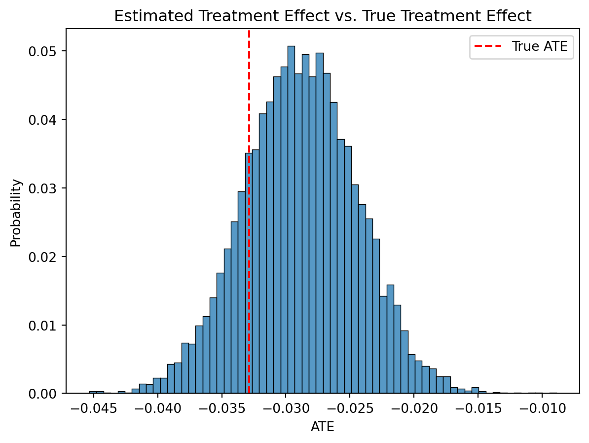

Introduction
How should you design your experiments if the metric you want to change might take months to observe?
Inspired by Susan Athey’s paper on Surrogate indexes and another working paper, Target for Long Term Outcomes, I’ve wanted to share my learnings about surrogate indexes for a long time.
I’m hoping to cover the following in a series of blog posts:
The surrogate index estimator
Surrogate Index in practice
- Fitting a surrogate index on a realistic dataset
- Validating the surrogate index over a set of historical experiments
Targeting Long Term Outcomes
- Optimizing a policy
- Attempting multi-armed bandits for early optimization
By simulating the data generating process from scratch, I hope this can also be a helpful tool for others to build on so they can answer their own questions they may have about estimating Long Term Treatment Effects.
Background
Surrogate indexes are an unbiased way to predict a long term treatment effect from an experiment, but of course they’re only unbiased if done correctly which is no easy feat.
At Policygenius, customers would take a long time to convert to a sale, and we found that optimizing for middle of the funnel was too easy to game - often we’d have hugely successful experiments that improved the whole top half of the funnel but we wouldn’t see any improvement in our true-north metric 6 months later, conversion to sale. Surrogate indexes were a natural way to try and solve that problem. LinkedIn also has a case study on their need to optimize long term outcomes and how they’re using surrogate indexes which is worth a read.
The Surrogate Index Approach
Surrogate indexes are a way to use short term proxies to estimate long-term treatment effects. For instance, lets say you’re a subscription company and you want to see how some intervention improves retention. But churn takes a long time to observe, so your experiment could go on for months. TLDR; is that with this approach, instead of measuring churn as your overall evaluation criteria (OEC), you measure predicted churn (with some caveats) as the OEC.
A common response might be “thats complicated, can we try something more simple for now?” Of course you can. You can always try to choose some single short term proxy as your OEC for an experiment. But be careful because you could end up over-optimizing that proxy and not seeing the improvement in your long term outcome that you want. Surrogate indexes instead have many short term proxies, and they are validated over a set of historical data to ensure they’re an unbiased estimator of long term treatment effects.
How do they work? Let’s start with a DAG
DAGs are diagrams, where the arrows represent causal effects. In this case, there’s some set of customer features \(X\), that influence some set of short term outcomes, \(S\) (a surrogate index).
There’s also a treatment, \(\text{Tx}\), that influences \(S\). It may influence different short term outcomes in S in different ways.
Lastly there’s \(Y\), our long-term outcome of interest. Notice that all of the effect of the treatment on \(Y\) flows through \(S\). This is saying that the entire causal effect of the treatment on \(Y\) is explained by the effect of the treatment on \(S\). Keep note of that, because its a key assumption for Surrogate Indexes to work.
A more detailed way to show this is through the use of IDAGs, a newer way to represent DAGs with interactions
The IDAG is shown on the right. The main difference is the new term, \(\Delta S_{\text{Tx}}\) It implies that \(X\) impacts the effect of the treatment on \(S\). More simply, the treatment will have different effects on \(S\) for different people based on their background, \(X\), also known as heterogeneous treatment effects (HTEs).
Typically we average over HTEs to just get a single average treatment effect (ATE) for experiments, and that’s what we’ll be doing here. But there are ways to estimate HTEs as well, and we’ll get to that in part 3 of this series.
This DAG can be used to build a surrogate index. If you can identify a set, \(S\), of shorter term proxies for \(Y\), and the effect of the treatment on \(Y\) is entirely explained by \(S\), than you can use \(\hat{Y} = f(S, X, T) + \epsilon\) as an unbiased estimator for \(Y\) before \(Y\) is actually observed. This also means that you can estimate the long term treatment effect by observing \(S\) for each variant of an experiment and using it to predict \(\hat{Y}\) for each group, then taking the difference: \[ E[\delta_{\text{LTO}}] = E[\hat{Y} | T=1] - E[\hat{Y} | T=0] \]
where \(\delta_{\text{LTO}}\) is the treatment effect on the long term outcome.
Lets start simulating to see that for ourselves
Showing that Surrogate Index works with Simulated Data
Step 1: Simulating the data
We’ll start by simulating two datasets: A historical dataset and an experiment dataset. The advantage to simulating data is that we know the exact effects, so when we try and estimate them we can confirm our methods are recovering the true effect.
import numpy as np
import pandas as pd
import matplotlib.pyplot as plt
import seaborn as sns
import statsmodels.api as sm
from simple_simulation import set_true_parameters, transmitter
SEED = 99
# step 1: simulate data
rng = np.random.default_rng(seed=SEED)
logit_link=True
# True parameters
Zdims = 20 # customer latent dims
Xdims = 5 # pre treatment covariates
Sdims = 8 # intermediate outcomes (the surrogates)
n_users = 50000
GROUND_TRUTH = set_true_parameters(Zdims, Xdims, Sdims, logit_link=True, rng=rng)
# Simulate data
historical_data = transmitter(GROUND_TRUTH, add_treatment=False, n_users=n_users,logit_link=logit_link, rng=rng)
experiment_data = transmitter(GROUND_TRUTH, add_treatment=True, n_users=n_users, logit_link=logit_link, rng=rng)
# Censor the experiment dataset so that we dont know the long term outcome yet
Y_TRUE = experiment_data.Y.values
experiment_data = experiment_data.assign(Y=np.NaN)
# Show the historical dataset
display(historical_data.head(5))WARNING (pytensor.tensor.blas): Using NumPy C-API based implementation for BLAS functions.| X0 | X1 | X2 | X3 | X4 | T | S0 | S1 | S2 | S3 | S4 | S5 | S6 | S7 | Y | |
|---|---|---|---|---|---|---|---|---|---|---|---|---|---|---|---|
| 0 | -0.096380 | 0.840839 | -1.053685 | -0.161607 | -1.464074 | 0.0 | 1.140716 | 0.460239 | -0.243707 | 0.478655 | 0.722508 | 0.119872 | -0.491021 | 0.657103 | 1 |
| 1 | 0.750790 | -0.723678 | 1.339998 | -0.109216 | -0.886968 | 0.0 | 0.173273 | -0.100168 | 0.150519 | -0.828812 | 0.288891 | -0.454165 | 0.356069 | -1.335292 | 1 |
| 2 | 1.135441 | -1.586930 | 1.226992 | 1.028425 | -0.628964 | 0.0 | -0.136527 | -0.151602 | 0.555157 | -1.382398 | -0.071426 | -0.453651 | 0.506445 | -1.059432 | 0 |
| 3 | 0.470862 | -0.472840 | 0.295874 | 1.280656 | -0.370790 | 0.0 | 0.172303 | 0.171164 | 0.069458 | -0.738659 | 0.113751 | -0.089416 | 0.115741 | 0.073674 | 0 |
| 4 | 0.299083 | -0.566013 | 0.851715 | 0.816545 | -0.128058 | 0.0 | -0.072062 | 0.078149 | 0.067890 | -0.761437 | 0.052046 | -0.173179 | 0.309554 | -0.506578 | 0 |
The underlying simulation code is below if you’re interested
Code
from typing import Dict
def transmitter(
params: Dict,
add_treatment: bool = False,
n_users: int = 1,
logit_link: bool = False,
rng = None
) -> pd.DataFrame:
'''Simulates outcomes based on some ground truth parameters.
Parameters
-----------
params: The ground truth parameters (effects and biases) to simulate based off of
add_treatment: adds a randomly allocated treatment when true, with effect `bTS`
n_users: The number of users to simulate
logit_link: whether the data generating process is a bernoulli outcome or not
rng: A numpy random generator
Returns
--------
A pandas dataframe with simulated data, including pre-treatment covariates,
surrogate outcomes, a treatment indicator, and a long term outcome, Y
'''
if rng is None:
seed = np.random.choice(range(1000))
rng = np.random.default_rng(seed=seed)
# unpack params
Zdims, Xdims, Sdims = params['bZX'].shape[1], params['bZX'].shape[0], params['bXS'].shape[0]
alphaX,alphaS,alphaY = params['alphaX'], params['alphaS'], params['alphaY'] # bias terms
bZX,bXS,bSY = params['bZX'], params['bXS'],params['bSY'] # causal relationships
bTS,bXTS = params['bTS'], params['bXTS'] # tx effects
# unobserved variable Z representing latent customer traits
Z = rng.normal(0,1, size=(Zdims, n_users))
# Some observed pre-TX measures
X = alphaX[:,None] + (bZX @ Z)
# Intermediate outcomes
S = alphaS[:,None] + (bXS @ X)
# Add in treatment effect if applicable
T = rng.binomial(1,0.5,size=n_users) if add_treatment else np.zeros(n_users)
avg_tx_term = (bTS * T[:,None])
hetergeneous_tx_term = (bXTS @ (X*T))
S += avg_tx_term.T + hetergeneous_tx_term
# expectation of long term outcome
eta = 0 + (bSY @ S)
# Long term outcome
if logit_link:
Y = rng.binomial(1, sp.expit(eta) )
else:
Y = rng.normal(eta, 0.025)
# Output as dataframe
Xdf = pd.DataFrame(X.T, columns=[f'X{i}' for i in range(Xdims)]).assign(T=T)
Sdf = pd.DataFrame(S.T, columns=[f'S{i}' for i in range(Sdims)])
Ydf = pd.DataFrame(Y.ravel(), columns=['Y'])
return pd.concat((Xdf, Sdf, Ydf),axis=1)Step 2: Fitting a surrogate model
We’ll use the historical dataset to fit the surrogate index model, mapping \(S \rightarrow Y\)
S_vars = " + ".join( historical_data.filter(like="S").columns )
X_vars = " + ".join( historical_data.filter(like="X").columns )
# Step 2: fit a surrogate index model on complete historical data
surrogate_model = sm.OLS.from_formula(f"Y ~ {S_vars}", data=historical_data).fit()
# Estimate the variance in the estimator, \hat{sigma^2}. This is used for bias corrections later
predicted_sigma2 = np.var( surrogate_model.fittedvalues - historical_data.Y, ddof=1 )
# Show the model summary
surrogate_model.summary()| Dep. Variable: | Y | R-squared: | 0.112 |
| Model: | OLS | Adj. R-squared: | 0.112 |
| Method: | Least Squares | F-statistic: | 1261. |
| Date: | Tue, 25 Feb 2025 | Prob (F-statistic): | 0.00 |
| Time: | 14:20:43 | Log-Likelihood: | -33320. |
| No. Observations: | 50000 | AIC: | 6.665e+04 |
| Df Residuals: | 49994 | BIC: | 6.670e+04 |
| Df Model: | 5 | ||
| Covariance Type: | nonrobust |
| coef | std err | t | P>|t| | [0.025 | 0.975] | |
| Intercept | 0.4994 | 0.002 | 236.981 | 0.000 | 0.495 | 0.504 |
| S0 | 0.0382 | 0.004 | 10.857 | 0.000 | 0.031 | 0.045 |
| S1 | 0.1023 | 0.005 | 21.446 | 0.000 | 0.093 | 0.112 |
| S2 | -0.0420 | 0.005 | -8.853 | 0.000 | -0.051 | -0.033 |
| S3 | 0.1861 | 0.004 | 50.774 | 0.000 | 0.179 | 0.193 |
| S4 | 0.0501 | 0.002 | 30.302 | 0.000 | 0.047 | 0.053 |
| S5 | 0.0666 | 0.002 | 28.930 | 0.000 | 0.062 | 0.071 |
| S6 | -0.0072 | 0.002 | -2.978 | 0.003 | -0.012 | -0.002 |
| S7 | 0.0037 | 0.003 | 1.348 | 0.178 | -0.002 | 0.009 |
| Omnibus: | 255849.096 | Durbin-Watson: | 1.998 |
| Prob(Omnibus): | 0.000 | Jarque-Bera (JB): | 5169.412 |
| Skew: | -0.002 | Prob(JB): | 0.00 |
| Kurtosis: | 1.425 | Cond. No. | 3.91e+15 |
Notes:
[1] Standard Errors assume that the covariance matrix of the errors is correctly specified.
[2] The smallest eigenvalue is 6.03e-27. This might indicate that there are
strong multicollinearity problems or that the design matrix is singular.
There are 3 important things to note here:
- Note that we’re purposely not including the pre-treatment covariates, \(X\) in this model. Remember the DAG - all of the effect of \(X\) on \(Y\) is entirely mediated by \(S\), so adding \(X\) into the model adds no additional information.
- We’re using Ordinary Least Squares for bernoulli outcome data. Thats not a mistake. OLS has great properties to be effective on bernoulli outcome data, and it makes this approach very simple. Other models can also be swapped in, like Random Forest or XGBoost.
- I’m not doing alot of model validation, just because this is simulated data. In practice, don’t just throw things into a model. Part 2 in this series will discuss how to validate surrogate indexes.
Step 3: Estimate Long Term Treatment Effect
We’ll now use the surrogate index to estimate a long term treatment effect
Let’s take our experiment dataset and estimate \(E[\delta_{\text{LTO}}]\), the average treatment effect on the long term outcome. Notice, the long term outcome, \(Y\), hasn’t been observed yet.
Code
display(experiment_data.head())| X0 | X1 | X2 | X3 | X4 | T | S0 | S1 | S2 | S3 | S4 | S5 | S6 | S7 | Y | |
|---|---|---|---|---|---|---|---|---|---|---|---|---|---|---|---|
| 0 | 0.849129 | 0.941827 | 0.683911 | 1.435666 | 1.001435 | 1 | -0.559842 | -0.575105 | -0.884129 | -0.543576 | -0.289843 | 0.816105 | -0.516732 | 0.887577 | NaN |
| 1 | -0.053981 | 0.716863 | 0.718290 | 1.600732 | 0.390534 | 1 | -0.271181 | 0.001847 | -0.690713 | -0.609596 | 0.001895 | 0.902771 | -0.263201 | 0.456430 | NaN |
| 2 | 0.852506 | 1.276305 | -1.803119 | -0.418187 | -0.009625 | 1 | 0.021439 | -0.752464 | -0.340972 | 0.909959 | -0.323996 | 1.041753 | -1.256339 | 1.851033 | NaN |
| 3 | -0.650541 | 0.908525 | 1.985210 | 1.231077 | 0.265338 | 1 | -0.226897 | 0.259183 | -0.987532 | -0.835104 | 0.359953 | 0.767602 | 0.108398 | -0.659191 | NaN |
| 4 | -0.473196 | -0.007258 | 0.054155 | -0.368575 | 0.331867 | 0 | -0.229447 | 0.020273 | 0.058779 | 0.200721 | -0.121112 | 0.062693 | 0.113565 | -0.206135 | NaN |
First, we’ll do some visulation of the experiment data.
Code
fig, axes = plt.subplots(2,int(Xdims/2),figsize=(7,5),sharey=True)
for i, ax in zip(range(Xdims), axes.ravel()):
sns.histplot( experiment_data.loc[lambda d: d['T']==0][f"X{i}"],ax=ax, label='Control' )
sns.histplot( experiment_data.loc[lambda d: d['T']==1][f"X{i}"],ax=ax, label='Treatment' )
plt.suptitle("Histogram of Pre-Treatment Covariates\nfor the Treatment and Control groups")
plt.tight_layout()As we can see above, the pre-treatment variables are the exact same between the experiment groups. Thats because users are randomly allocated into treatment and control groups, and their pre-treatment varibles by definition are things not imapcted by the experiment.
Conversely, if we look at the surrogate outcomes below, we’ll see some differences in surrogate outcomes between the treatment and control groups.
Code
fig, axes = plt.subplots(2,int(Sdims/2),figsize=(7,5), sharey=True)
for i, ax in zip(range(Sdims), axes.ravel()):
sns.histplot( experiment_data.loc[lambda d: d['T']==0][f"S{i}"],ax=ax, label='Control' )
sns.histplot( experiment_data.loc[lambda d: d['T']==1][f"S{i}"],ax=ax, label='Treatment' )
plt.suptitle("Histogram of Surrogate Outcomes\nfor the Treatment and Control groups")
plt.tight_layout()If our surrogate index estimator is correct, these observed surrogate outcomes should directly map to the Long Term Outcome deterministically, via \(\hat{Y} = f(S)\), where \(f()\) is the surrogate index model.
We can show that the surrogate index estimator recovers the true average treatment effect on the long term outcome
def estimate_delta_LTO(experiment_data, surrogate_model, predicted_sigma2):
'''Accepts experiment data with a binary treatment, a surrogate model, and the predicted sigma^2 of the surrogate model.
Returns the ATE estimate and its uncertainty
'''
Y_T1 = surrogate_model.predict(experiment_data.loc[lambda d: d['T']==1])
Y_T0 = surrogate_model.predict(experiment_data.loc[lambda d: d['T']==0])
# Calculate the ATE
ATE = Y_T1.mean() - Y_T0.mean()
# calculate the variance
var_surrogate = np.var(Y_T1,ddof=1) / len(Y_T1) + np.var(Y_T0,ddof=1) / len(Y_T0)
# Adjust the variance by the surrogate model error
var_surrogate_adj = var_surrogate + 2*predicted_sigma2/len(Y_T1)
ATE_sd = np.sqrt(var_surrogate_adj)
return ATE, ATE_sd
ATE, ATE_sd = estimate_delta_LTO(experiment_data, surrogate_model, predicted_sigma2)
sns.histplot(np.random.normal(ATE, ATE_sd, size=10000), stat='probability')
plt.axvline( GROUND_TRUTH['ATE'], color='r', ls='--', label='True ATE')
plt.legend()
plt.xlabel("ATE")
plt.title("Estimated Treatment Effect vs. True Treatment Effect")
plt.show()
There we are. The surrogate estimator recovers the true average treatment effect! We didn’t even have to wait and observe the true long term outcome.
If you’re interested, try simulating this repeatedly to confirm it regularly recovers the true ATE with different random seeds. Even better, try setting the treatment effect to zero and see how often there are false positives.
What’s next?
Hopefully this post convinced you that the surrogate index approach can help assess long term outcomes in experiments faster.
While its easier to show this approach works, it’s harder to pull it off in practice. The next post will focus on how to validate a surrogate index estimator on more realistic data that you might see in industry.